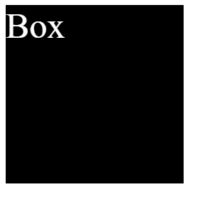

Nếu như bạn có hứng thú với việc tạo các trang web, bạn có thể đã nghe đến 2 ngôn ngữ HTML và CSS, nhưng chúng là gì? Và tại sao nó lại quan trọng trong việc tạo ra 1 trang web như thế? Dưới đây mình sẽ giải đáp các thắc mắc và hướng dẫn chi tiết những điều cơ bản cần biết khi học HTML và CSS.
HTML là gì?
HTML là viết tắt của HyperText Markup Language, dịch ra có nghĩa là Ngôn ngữ Đánh dấu Siêu Văn bản, vì thế nên HTML không phải là ngôn ngữ lập trình.
Trong lập trình Web, HTML được sử dụng rộng rãi để tạo nên cấu trúc cơ bản của 1 trang Web thông qua các cặp thẻ của nó, trong đó, 1 cặp thẻ sẽ có 1 thẻ đóng và thẻ mở, ví dụ:
<h1>Cặp thẻ tiêu đề</h1>
Trong đó, thẻ mở của dòng code trên là: <h1>, đối
với thẻ đóng thì sẽ có 1 dấu gạch chéo đằng trước tên thẻ:
</h1>
CSS là gì?
CSS là viết tắt của Cascading Style Sheets, cũng giống như HTML, CSS cũng không phải là Ngôn ngữ Lập trình, CSS chỉ được coi là một Ngôn ngữ Điều chỉnh Giao diện.
Trong Lập trình Web, CSS thường được sử dụng để định dạng, tạo kiểu cho các phần tử HTML, giúp trang Web trở nên bắt mắt hơn. ! ví dụ cho việc sử dụng CSS trong dự án:
HTML
<body>
<div class = "box">Box</div>
</body>
CSS
.box {
font-size: 50px; /* cỡ chữ 50px */
color: white; /* màu chữ trắng */
background-color: black; /* nền đen */
width: 250px; /* rộng 250px */
height: 250px; /* cao 250px */
}
Output:
